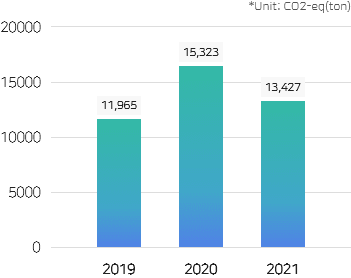
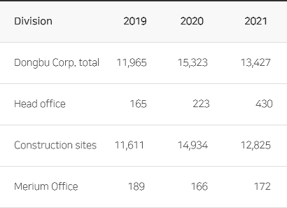
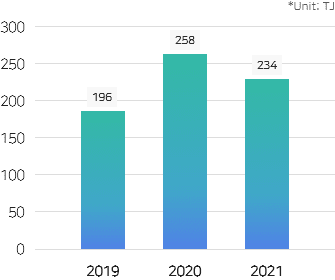
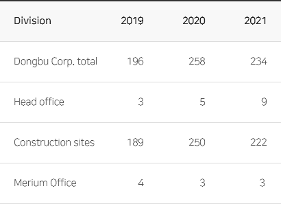
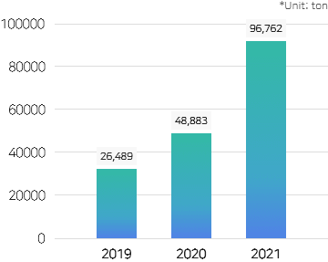
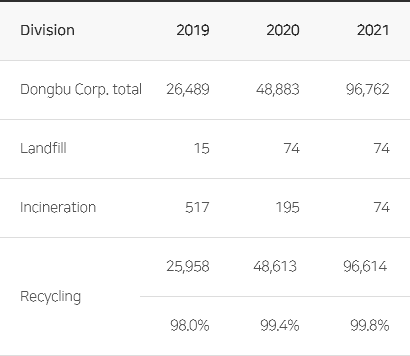
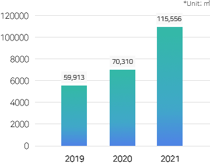
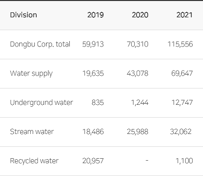

환경경영

- 환경경영방침
-
동부건설은 고객에게 감동을, 주주에게 이익과 만족을 주는,
'사회적 책임을 다하는 명품 기업'으로, 대한민국을 대표하는 지속가능한 종합건설기업을 만들기 위하여
다음과 같이 환경경영을 실천한다.- 친환경 건설 사업 수행으로 환경오염을 예방한다.
- 사업활동에 적용되는 환경법규와 협약을 준수한다.
- 지속적인 환경경영으로 ESG경영을 실천한다.
2022.01.03
동부건설 대표이사
환경경영목표
- 환경 사고 Zero
효율적인 환경관리
환경과 이해관계자를 먼저 생각하는 건설 관리
- 01
- 효율적인 업무시스템 구축
- 법적 기준을 준수하는 환경업무 기준 수립
- 지속적인 환경 정보 제공 및 공유
- 환경 커뮤니케이션 활성화
- 02
- 기본 역량 확보 및 전문 역량 강화
- 전 직원의 기본적인 건설 환경 업무 역량 확보
- 현장 환경담당자의 전문 역량 강화
- 본사 담당자의 지원 역량 강화
- 03
- 건설 환경 법규 준수
- 지속적인 환경 교육 실시
- 환경관리 지원 및 점검 강화
- 효율적인 현장 자체 환경 점검 정착
환경경영 체계
친환경 사업 프로세스
- 환경 친화적 사업 수행을 위하여 사전 검토 제도를 운영합니다.
-
- 친환경 사업 수행을 위하여 법규와 제반 규정을 반영한 목표관리 제도 운영
- 사업장 여건에 적합한 환경영향 저감 방안을 정하여 시공 계획에 반영
- 환경사고 예방과 환경오염 저감 활동을 수행합니다.
-
- 자체 환경점검 제도 운영으로 환경사고 예방
- 제 3자 점검제도를 활용한 환경관리 적정성 확보 및 개선
- 환경목표 달성을 위한 협력업체 지원 및 상호협력
- 신기술 개발 및 체계적인 교육으로 환경경영 역량을 배양합니다.
-
- 친환경 신기술/신공법 개발
- 체계적인 환경교육과 훈련을 통한 환경의식 고취 및 환경관리 역량 강화
동부건설은 친환경 사업 수행을 위하여 다음과 같은 프로세스를 운영하고 있습니다.
- 현장 환경방침 수립
환경리스크 분석 및 예측
제도 검토, 주민 의견 수립
- 구성원 역량 확보를 위한 교육
친환경 운영 기준 준수
비상사태 대비/대응체계 구축
- 환경경영 적정성 측정 확인
외부 환경변화 모니터링
- 부적합 시정 및 재발방지 활동
성과창출을 위한 지속적 개선
환경경영시스템 인증현황
Environmental Management System
ISO 14001:2015
- ISO 14001 인증
-
기업에 유효한 환경경영시스템의 구축과 실현여부를
제3자(인증기관)가 평가하여
기업 품질경영시스템의 적합성을 인정해주는 인증서
- 취득/유지 연혁
-
- 1996. 09 ISO 14001 인증 취득 (BVQI)
- 1998. 05 ISO 14001 인증 변경 (KFQ 한국품질인증센터)
- 2006. 06 ISO 14001 인증 변경 (BSI Korea)
- 2016. 06 ISO 14001 인증 변경 (TUV Korea)
- 인증 범위
-
토목, 빌딩 및 주택, 플랜트(화학, 발전, 환경 및 산업시설 포함), 소방공사,
전기공사 및 통신공사의 설계, 개발, 프로젝트관리, 구매, 건설, 운영 및 서비스
- 환경오염 저감 활동
-
동부건설은 건설 현장과 주변의 쾌적한 환경을 유지하기 위하여, 환경법규를 준수하고 친환경 건설 수행에 노력하고 있습니다.
- 환경교육
-
동부건설은 전 임직원과 근로자가 환경법규를 준수하고 친환경 건설에 동참 할 수 있도록환경교육을 실시하고 있습니다.
- 환경점검
-
환경법규를 준수하고 오염을 저감하기 위하여 자체 점검 활동을 수행하고 있습니다.
- 주요 환경 지표
-
동부건설은 본사와 현장, 기타 사업장의 환경과 관련된 지표를 관리하고 있으며, 주요 사항은 다음과 같습니다.
-
온실가스 배출량 (본사 및 사업장, CO2-eq(ton))
 
-
에너지 사용량 (본사 및 사업장, TJ)
 
-
폐기물 처리 실적 (톤)
 
-
용수 사용량 (㎥)
 
-
수질오염물질 측정 현황 (㎎/ℓ)
-
대기오염물질 측정 현황 (㎎/㎥)
-
온실가스 배출량 (본사 및 사업장, CO2-eq(ton))
- 환경점검 실적
-
2021년
대상현장 점검주관 점검구분 점검횟수(회) 비고 전 현장 본사 정기 지원점검 47 현장별 연 1회 점검 온라인 점검 188 현장별 연 4회 점검